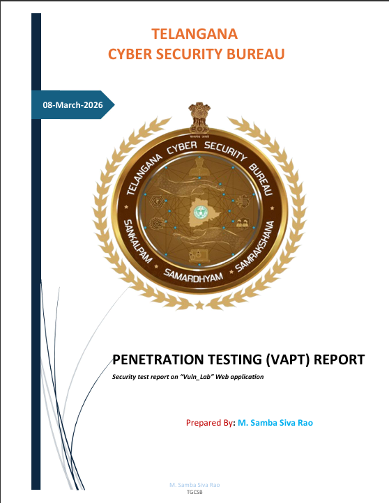
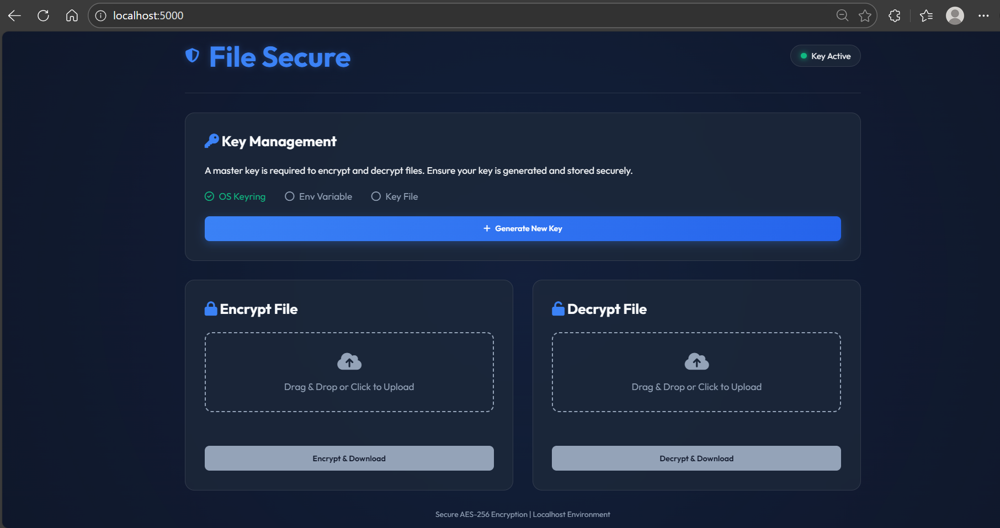
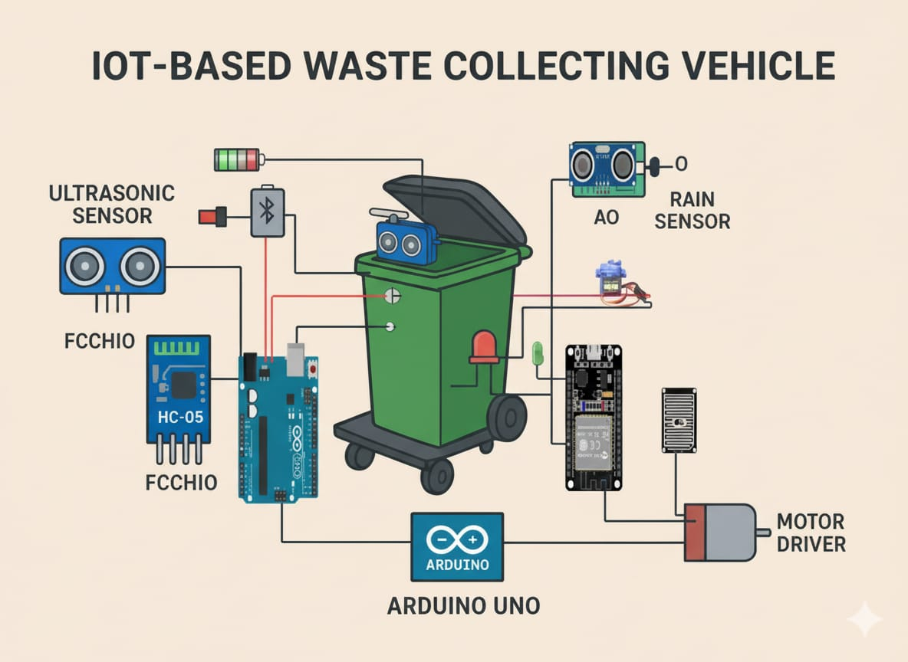
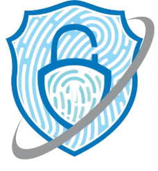

🔍
Python Port Scanner
TCP port scanner using socket programming to identify open, closed, and filtered ports for accurate network reconnaissance.
Python • Socket • Network Security
I break things to make them stronger. Specializing in
vulnerability testing,
Web App Penetration and
secure tool development.
My journey is hands-on testing, breaking, and patching real systems.

I’m Samba Siva Rao, a passionate Cyber security student focused on learning ethical hacking, web application security, and real-world threat analysis.
Cybersecurity Professional specializing in Web Application Penetration Testing (VAPT). I have deep technical knowledge in identifying and exploiting OWASP Top 10 vulnerabilities such as Injection (SQLi, XSS), Broken Access Control (IDOR), Security Misconfigurations and Insecure Deserialization. With a 'break-and-patch' mindset, I utilize industry-standard tools like Burp Suite, Nikto, Nmap, Gobuster and Metasploit to secure complex web architectures. I utilize Python to develop custom security automation tools.
Alongside cybersecurity, I enjoy coding in Python. I’ve completed a Python certification and built several small projects involving automation and security tools.
Tools and technologies I use to analyze threats, find vulnerabilities, and build secure solutions.
Security tools, automation, and research projects that demonstrate my hands-on approach to cybersecurity.

Conducted a full-lifecycle Vulnerability Assessment and Penetration Testing (VAPT) on a target web application in a TGCSB lab environment. I explicitly prioritized an intensive, manual testing methodology instead of relying on automated vulnerability scanning, enabling much deeper exploitation and discovery of complex logic flaws.

Build a secure file encryption and decryption tool designed to protect sensitive data from unauthorized
access The application utilizes strong cryptographic algorithms (AES-256) to
securely
encrypt files.
Encryption keys are securely stored and managed within the operating system kernel, ensuring enhanced
protection
against unauthorized access and potential key compromise.

Designed and implemented a smart waste collection vehicle controlled via a Bluetooth-enabled mobile application. The system integrates ESP32 and Arduino Uno to manage motor control, sensor input, and wireless communication.
Security research prototype exploring keystroke interception methods in a controlled environment to better understand common attack vectors and support the development of defensive security practices.
TCP port scanner using socket programming to identify open, closed, and filtered ports for accurate network reconnaissance.
Python • Socket • Network SecurityBuilt a WAF evaluation framework that analyzes filtering behavior under encoded and normalized inputs, producing defensive hardening recommendations
OWASP WAF • Packets Analysis • HTTP HeaderSecurity tool to detect unauthorized keystroke activities. Monitoring keyboard hook activitys for suspicious patterns and generates real-time alerts.
Monitoring • Detection • AlertsReal-world security experience through hands-on internships in malware analysis and vulnerability assessment.
At TGCSB, I gained deep operational exposure to both offensive security and the investigative frameworks of law enforcement, understand the real-world tactics used to combat cybercrime.

SpyPro Solution Pvt. LtdConducted in-depth analysis of malicious software to understand attack vectors and develop defensive strategies.
Hands-on security testing experience focused on vulnerability scanning and web application security.
Professional certifications and credentials that validate my expertise in cybersecurity.
Certified Junior Web Application Penetration Tester — ID: ECR-01629
Comprehensive ethical hacking and penetration testing certification
National Programme on Technology Enhanced Learning certification
Hands-on malware analysis and threat detection training
Practical cybersecurity and vulnerability assessment certification
Acquired essential concepts related to the employability curriculum.
Open to client work and collaborative cybersecurity projects. Let’s connect and explore how I can support and enhance your security initiatives.